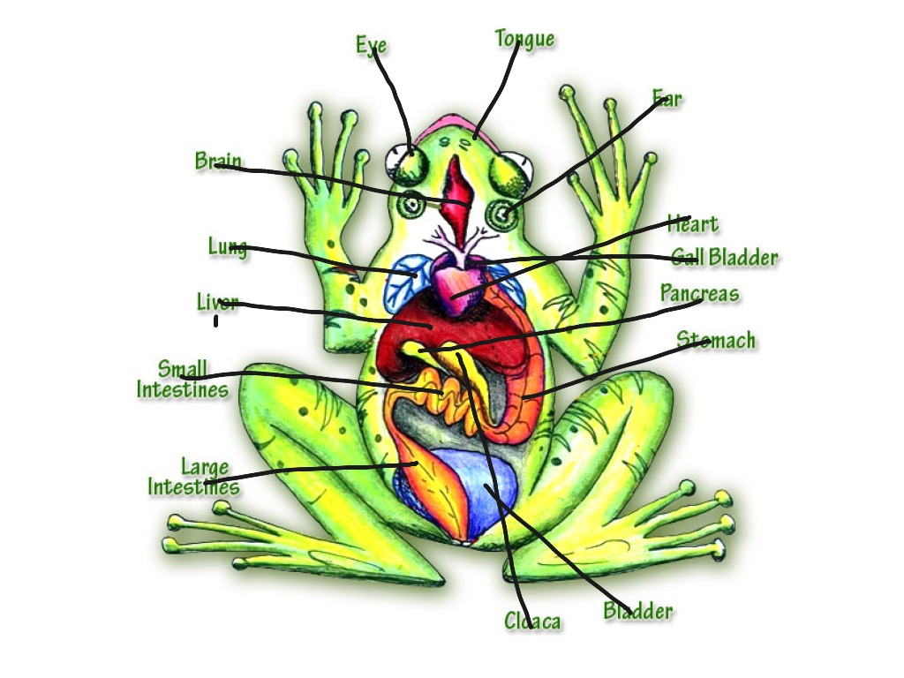

Amazing Frogs: Exploring Frog Bodies!
Hello, little biologists! Let's explore and learn about the amazing bodies of frogs. 🐸
Frog Anatomy 101
- Skin: Frogs have smooth, moist skin that can breathe!
- Legs: Powerful back legs for super jumping.
- Eyes: Big eyes for a wide view.
- Tongue: Fast and sticky for catching bugs.
- Heart and Lungs: A three-chambered heart and lungs for breathing.
Froggy Senses
Frogs have excellent hearing and touch, especially in water.
Life in Water and on Land
Frogs start as tadpoles in water and grow lungs to breathe air as adults.
Fun Activity
Can you draw a frog and label its parts? Show the legs, eyes, tongue, and skin. It's fun to learn about frog biology!